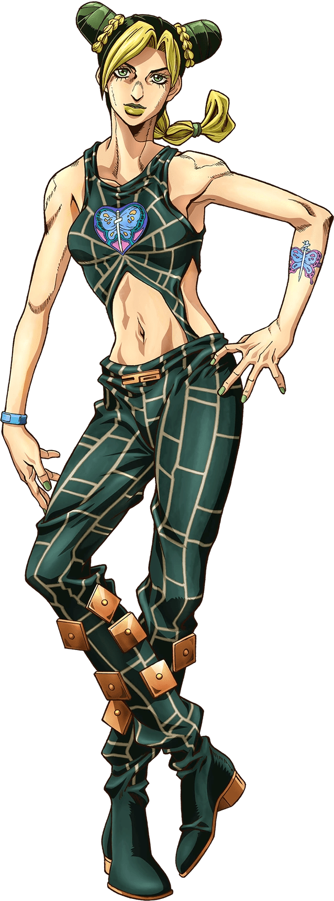
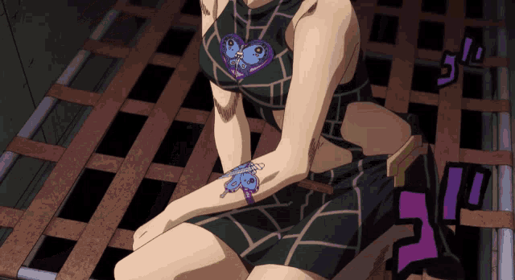
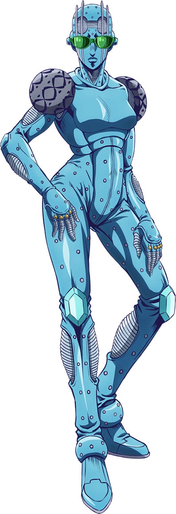

Stone Free (ストーン・フリー, Sutōn Furī?, con frecuencia abreviado como Ｓストーン・Ｆフリー)[1] es el
Stand de Jolyne Cujoh, que aparece en la Parte 6: Stone Ocean.
A diferencia de otros herederos de la Familia Joestar, Jolyne desarrolló su Stand cuando
cortó su dedo con la punta de un fragmento de la flecha creadora de Stands que su madre
le
regaló.
El Grito de Stand, al igual que Star Platinum, es ORA ORA ORA; aunque se presume que es
Jolyne la que evoca este grito de batalla en vez de su Stand.
A corta distancia y cuando está ensamblado, Stone Free tiene buena fuerza física
pudiendo
doblar una moneda, pero no es lo suficientemente fuerte como para doblar y romper los
barrotes de una celda además de poder desviar las balas cuando sean disparadas en su
contra
gracias a su velocidad que es equivalente a la de un meteorito extremadamente pequeño y
veloz.
Además de esta cualidad, Stone Free también cuenta con habilidades integradas al cuerpo
de
Jolyne, permitiéndole deshacer su cuerpo en la forma de una cuerda extremadamente fina
la
cual ella puede usar de distintas maneras según la situación.
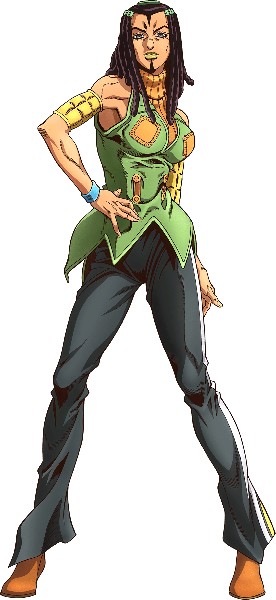
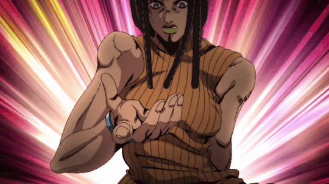
Ermes es una mujer de altura promedio o por encima de la media y constitución atlética o
mediana.
Luce su cabello cabello oscuro en rastas, y tiene largas cicatrices triangulares que se
acercan
a sus ojos y labios en su frente y barbilla.
Usa unos brazaletes en cada brazo, una chaqueta que acaba en puntas medio abiertas, y
por debajo
lleva un jersey sin mangas de cuello alto. También lleva unos pantalones oscuros
ajustados con
una línea blanca y unas botas con tacón.
Ermes ha alterado quirúrgicamente sus pechos para poder esconder dinero desde sus
costados.
A pesar de un duro exterior, Ermes es orgullosa, leal y testaruda.
Ella no se aleja de una pelea y está dispuesta a hacer casi cualquier cosa para ponerse
en una
situación mejor, ya sea si está tomando una apuesta que podría arriesgar sus órganos
hasta
incluso dividir sus propias partes del cuerpo con su capacidad de Stand, a pesar de
saber que
eventualmente tiene que ser fusionadas de nuevo, hiriéndola severamente.
Demuestra una severa sensación de resistencia, ya que estaba todavía de pie y moviéndose
incluso
después de que Marilyn Manson tomó su hígado y sobrevivió a las experiencias compartidas
de los
intentos de suicidio de Thunder McQueen. Tiene un buen sentido de la justicia, pero
castiga
violentamente a cualquiera que se interponga en su camino.
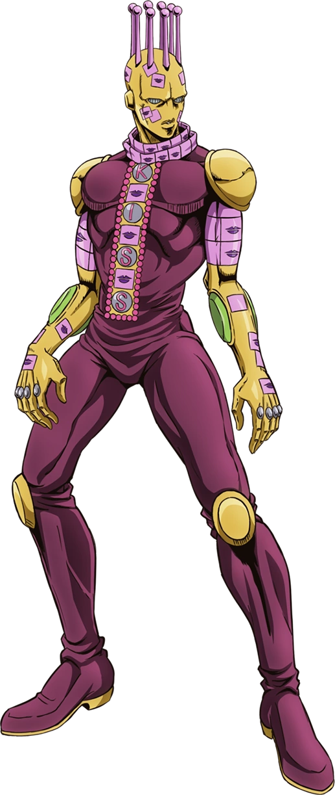
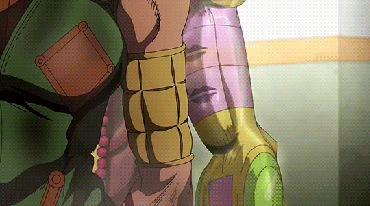
Kiss es un stand humanoide de construcción atlética, similar a la de Ermes.
Su cuerpo está cubierto en parece ser un mono oscuro, sobre el cual hay hombreras
ligeras,
rodilleras y guantes de brazo que comparten una textura metálica. En su pecho hay una
losa
metálica vertical tachonada en la cual se deletrea el nombre "Kiss".
Su cabeza, también tiene una textura metálica, es calva excepto por una serie de puntas
rectas
que dan la apariencia de una corona. No hay orejas, sino dos clavos en su lugar.
Está cubierto con pegatinas diseñadas para los labios, especialmente en el cuello, los
brazos y
la cabeza.
Pegatinas de copiado: Kiss es capaz de colocar pegatinas de labio diseñado en los
objetos, lo
que le permite producir una copia exacta del objeto original. Cuando la etiqueta se
quita, los
dos se fusionan de nuevo en uno casi inmediatamente y con gran fuerza, causando una
fisura y
dañando eficazmente al objetivo originalmente duplicado. Estas pegatinas se pueden
utilizar de
manera eficaz mediante la re-fusión de dos objetos juntos cuando un enemigo está de pie
en medio
de dos objetos, o la re-fusión de la parte del cuerpo de un enemigo para causar daños.
El
usuario también puede doblar sus propias partes del cuerpo para bloquear un ataque que
se
aproxima, pero la parte del cuerpo debe eventualmente volverse a fusionarse, y puede
hacerlo de
manera no perjudicial.
Super Fuerza: Además de su capacidad de copiar, la fuerza de Kiss y la velocidad la
hacen una
rival incluso para Jolyne y Stone Free.
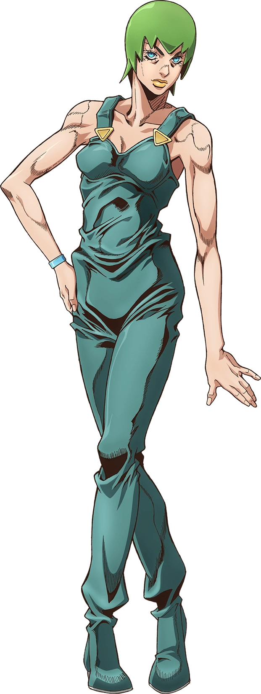
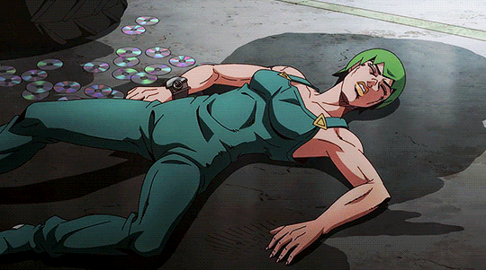
Foo Fighters (フー・ファイターズ, Fū Faitāzu?), más comúnmente conocida como F.F., es una aliada
principal que aparece en Stone Ocean.
F.F. es una personalidad compuesta de plancton; organizada, mantenida por y
esencialmente
equivalente al Stand homónimo, Foo Fighters.
F.F. puede cambiar su aspecto en cualquier momento. Sin embargo, su apariencia habitual
es la de
la prisionera Atroe; una mujer de estatura media y esbelta; con el cabello o gorro que
cubre su
cabeza en cabello corto o un manto, formando un borde cerrado en sus extremos.
Debido a que su cuerpo está compuesto de plancton, F.F. puede contorsionarse en curvas
imposibles e incluso deslizarse a través de cercas barradas ilesas. Los cuerpos en los
que se
puede formar son sus cuerpos secundarios, que toma inicialmente para luchar contra
Jolyne y
Ermes, y el cuerpo principal, que adopta fuera del agua y cuando ha recolectado bastante
plancton. Los cuerpos que tomó fueron los tres prisioneros sin nombrar, incluyendo a
Atroe.
F.F. se muestra comúnmente que lleva una de taza de 32 onzas llena cerca de sí misma
cuando no
está cerca de una fuente de agua.
Foo Fighters se retrató originalmente como un subordinado obediente cuyo único propósito
era
cumplir las órdenes de Pucci. Después de conocer a Jolyne, comienza a crecer a un
sentido de
individualidad a lo largo de la historia.
La personalidad de Foo Fighters depende del hecho de que posee "intelecto" pero poca
experiencia
de vida. Durante su arco introductorio, su único objetivo es preservarse, lo que incluye
obedecer las instrucciones de Whitesnake para proteger los discos. Como su tutor, ataca
a las
personas de manera implacable y apunta a matar a cualquiera que se acerque al escondite
del
disco, independientemente de su nivel de amenaza. Siendo un ser intelectual, Foo
Fighters otorga
gran importancia a sí mismo e implorará a su enemigo que lo reconozca como sensible
llamándolo
por su nombre. También cita al astrónomo Fred Hoyle para afirmar que un "intelecto" guía
al
universo, incluso lo precede, todo para decir que incluso el plancton puede ser
inteligente.
Cuando Foo Fighters muere, Jolyne se encuentra con su fantasma por un corto tiempo y la
antigua
masa de plancton contempla felizmente su forma de espíritu que confirma que ella estaba
verdaderamente viva y sensible.
Sin embargo, cuando Jolyne muestra compasión por ella y la salva de la deshidratación,
Foo
Fighters descubre otra forma de pensar y se interesa en ella, prometiendo proteger a
Jolyne y
acompañarla a partir de ahora disfrazado como la prisionera, Atroe.
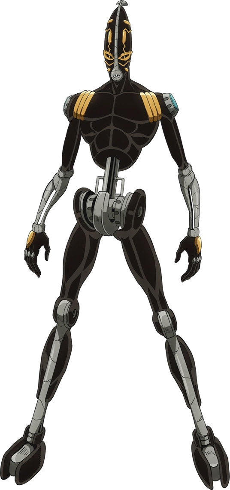
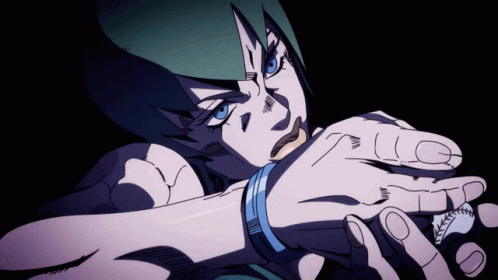
Foo Fighters (フー・ファイターズ, Fū Faitāzu?), más comúnmente conocida como F.F., es una aliada
principal que aparece en Stone Ocean.
F.F. es una personalidad compuesta de plancton; organizada, mantenida por y
esencialmente
equivalente al Stand homónimo, Foo Fighters.
F.F. puede cambiar su aspecto en cualquier momento. Sin embargo, su apariencia habitual
es la de
la prisionera Atroe; una mujer de estatura media y esbelta; con el cabello o gorro que
cubre su
cabeza en cabello corto o un manto, formando un borde cerrado en sus extremos.
Debido a que su cuerpo está compuesto de plancton, F.F. puede contorsionarse en curvas
imposibles e incluso deslizarse a través de cercas barradas ilesas. Los cuerpos en los
que se
puede formar son sus cuerpos secundarios, que toma inicialmente para luchar contra
Jolyne y
Ermes, y el cuerpo principal, que adopta fuera del agua y cuando ha recolectado bastante
plancton. Los cuerpos que tomó fueron los tres prisioneros sin nombrar, incluyendo a
Atroe.
F.F. se muestra comúnmente que lleva una de taza de 32 onzas llena cerca de sí misma
cuando no
está cerca de una fuente de agua.
Foo Fighters se retrató originalmente como un subordinado obediente cuyo único propósito
era
cumplir las órdenes de Pucci. Después de conocer a Jolyne, comienza a crecer a un
sentido de
individualidad a lo largo de la historia.
La personalidad de Foo Fighters depende del hecho de que posee "intelecto" pero poca
experiencia
de vida. Durante su arco introductorio, su único objetivo es preservarse, lo que incluye
obedecer las instrucciones de Whitesnake para proteger los discos. Como su tutor, ataca
a las
personas de manera implacable y apunta a matar a cualquiera que se acerque al escondite
del
disco, independientemente de su nivel de amenaza. Siendo un ser intelectual, Foo
Fighters otorga
gran importancia a sí mismo e implorará a su enemigo que lo reconozca como sensible
llamándolo
por su nombre. También cita al astrónomo Fred Hoyle para afirmar que un "intelecto" guía
al
universo, incluso lo precede, todo para decir que incluso el plancton puede ser
inteligente.
Cuando Foo Fighters muere, Jolyne se encuentra con su fantasma por un corto tiempo y la
antigua
masa de plancton contempla felizmente su forma de espíritu que confirma que ella estaba
verdaderamente viva y sensible.
Sin embargo, cuando Jolyne muestra compasión por ella y la salva de la deshidratación,
Foo
Fighters descubre otra forma de pensar y se interesa en ella, prometiendo proteger a
Jolyne y
acompañarla a partir de ahora disfrazado como la prisionera, Atroe.
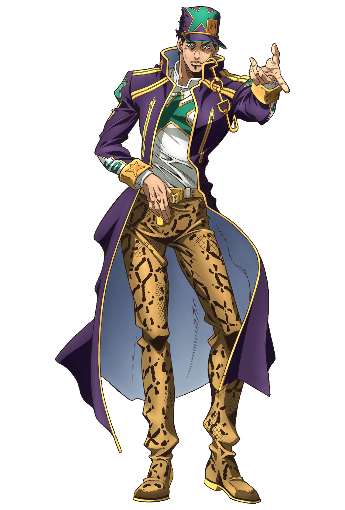
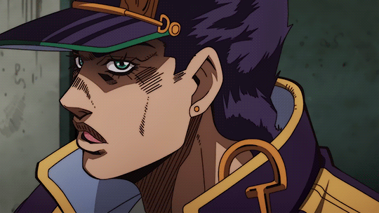
Jotaro Kujo (空条 承太郎, Kūjō Jōtarō?) es el protagonista de la Parte 3: Stardust Crusaders.
También
realiza un rol prominente en la Parte 4: Diamond is Unbreakable, uno secundario en la
Parte 5:
Vento Aureo, y nuevamente con un rol clave en la Parte 6: Stone Ocean.
Serio, estoico e inteligente, Jotaro brinda gran poder y estabilidad a sus aliados.
También es
el primer JoJo introducido con un Stand y uno de los personajes más reconocidos de toda
la
serie.
Stardust Crusaders: Jotaro es introducido como un rebelde tosco buscapleitos, pero tiene
un
corazón gentil y es leal a aquellos que le agradan. Es muy perspicaz, inteligente y de
ingenio
rápido, manteniendo una actitud ligeramente neutral o indiferente perpetuamente serena.
Su rasgo más notable es su naturaleza aparentemente distante. Es un individuo callado, a
menudo
satisfecho con expresarse en frases cortas. Araki ha explicado que cree que cualquier
persona
puede notar sus emociones con sólo mirarlo, y probablemente piensa que esforzarse de más
en
retratar cómo se siente sería una pérdida de tiempo, haciendo que los demás tiendan a
percibirlo
como insensible.
Stone Ocean: en la Parte 6, demuestra un lado protector hacia su hija Jolyne, aunque su
abandono
en el pasado empeoró su relación. Otro ejemplo de su actitud distante disminuyendo es
admitirle
que él la apreciaba, lo que motivaría a Jolyne a lo largo de su aventura.
Después de que "revivió", Anasui, uno de los compañeros de Jolyne que estaba enamorado
de ella,
le pide a Jotaro que aprobara su propuesta de matrimonio. Reaccionando en primer lugar
como si
él hablara tonterías, cuando Jotaro ve a Jolyne apoyándose contra el pecho de Anasui, él
tira de
ella hacia sus propios brazos, de manera protectora; dejando a Jolyne desorientada en
cuanto a
su interacción.
Durante la lucha final contra Pucci, el amor de Jotaro por su familia pudo más que él, y
cometió
el error de tratar de salvar a Jolyne y al mismo tiempo matar a Pucci, sin embargo, no
tuvo
éxito alguno en ambos casos, terminando asesinado.
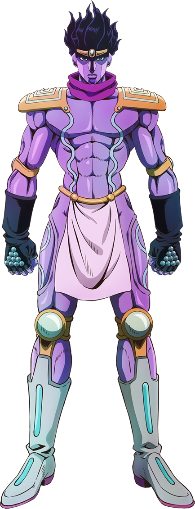

Star Platinum es un Stand humanoide, con una proporción similar a Jotaro. En los
coloreados del
manga, el color de su piel va desde el violeta, hasta el azul o verdes. En el anime es
mayormente violeta.
Tiene un largo cabello que fluye con una sombra más oscura sobre sus ojos y nariz,
difuminando
la distinción entre su pelo y la cabeza. Lleva una cinta metálica en tres piezas, cuya
pieza
central está configurada como una elipse vertical. Sus rasgos faciales son muy similares
a los
de Jotaro.
Unas líneas onduladas se extienden desde cada brazo hasta el frente de su torso,
continuando por
sus piernas. Tiene una gama mínima de ropa y armadura, incluyendo una bufanda corta y
circular,
hombreras con diseño en espiral, guantes largos con clavos en la espalda, protectores de
rodilla
y codo, un taparrabos y botas cortas (llegaron por la parte de la rodilla en la Parte
6).
Star Platinum fue diseñado para parecerse a un espíritu guardián. Sus hombreras se
asemejan a
las que se usan en Hokuto no Ken. En la adaptación de anime de la Parte 4, la ropa de
Star
Platinum, como su bufanda roja y sus guantes negros se vuelven blancos, reflejando la
transición
de Jotaro de la ropa negra a la blanca. Sus puntos más oscuros del púrpura, tales como
los de
debajo de sus ojos, también se convierten en un color cían. En la adaptación al anime de
la
Parte 6 sus guantes vuelven a cambiar de color a un negro azulado y sus nudillos son de
color
azul claro.
Jotaro describió a Star Platinum como un ser muy violento. Suele ser silencioso, excepto
cuando
lanza golpes, gritando "ORA ORA ORA" en voz alta, bastante rápido y repetidamente. Con
una cara
relativamente humana ha demostrado tener expresiones tales como fruncir el ceño y
sonreír.
Star Platinum demuestra un tipo de interés en la auto-conservación, como se ve cuando
detiene
una bala que Jotaro dispara experimentalmente en su propia cabeza, protege a un Jotaro
incapacitado de los ataques de DIO durante los efectos de su The World, y lo revive de
cerca de
la muerte directamente hacia latir su corazón (Sin embargo, considerando el papel
pionero de
Star Platinum en la serie, esta capacidad puede hablar principalmente de cualidades
metafísicas
o subconscientes genéricas para los usuarios de Stand).
En el manga original, Star Platinum desde el principio se ve con una sonrisa amplia y
desconcertante. Más tarde, Star Platinum gana el rostro estoico de Jotaro, cualquier
sonrisa
futura va a advertir a la persona que se dirige a un gran dolor inminente.
Star Platinum lleva el nombre de la carta del Tarot La Estrella, que simboliza el
optimismo, el
discernimiento y la esperanza.
Star Platinum es un Stand de corto alcance, con un alcance básico de solo 2 metros del
cuerpo de
Jotaro, pero con una fuerza, velocidad y precisión increíbles.
Es uno de los Stands más poderosos de la serie. Su abrumadora destreza física en cada
característica básica, salvo el alcance, junto con la habilidad de Jotaro en combate,
permite
que Jotaro prevalezca repetidamente contra muchos usuarios de Stand incluso sin el uso
de
ninguna habilidad especial. Además, el descubrimiento de Jotaro de su capacidad para
detener el
tiempo solo lo hizo aún más formidable en el combate.
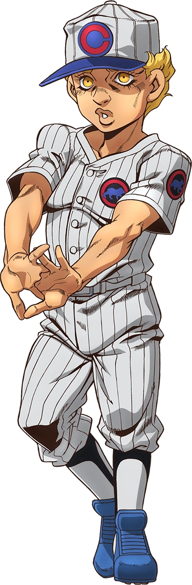
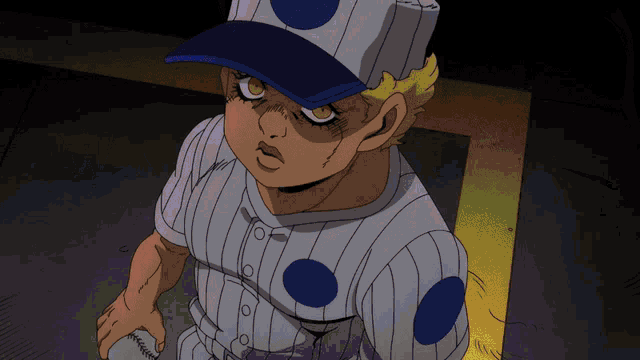
Emporio Alniño (エンポリオ・アルニーニョ, Enporio Arunīnyo?) es un aliado principal que aparece en
Stone
Ocean.
Emporio es un niño que nació y secretamente vive en la Prisión Green Dolphin Street.
Emporio se
vuelve leal por su propia voluntad a Jolyne y se convierte en un importante aliado.
Emporio se muestra por primera vez como un niño tímido, incómodo, no dispuesto a unirse
a la
batalla.
Sin embargo, como él continúa ayudando a los héroes, él se arrastra lentamente en la
lucha él
mismo. Se demuestra útil utilizando su computadora para obtener información sobre los
poderes de
los villanos, y para ayudar a Jolyne a salir de varios lugares apretados ocultándola en
su
"habitación fantasma".
Cuando está atrapado en un conflicto, no suele ser capaz de luchar. La principal
excepción a
esto es su confrontación final con Pucci, cuando es ayudado por Weather Report y su
Stand.
El Stand de Emporio, Burning Down the House, es una habitación que comprende un espacio
secreto
y alternativo dentro de la Prisión Green Dolphin Street, a la que sólo él puede conceder
la
entrada. La sala contiene una serie de objetos útiles e imperecederos.
Emporio es un luchador tímido, pero se muestra capaz de seguir las instrucciones que le
dio el
grupo.
Emporio toma prestado el Stand de Weather Report después de la muerte de su usuario.
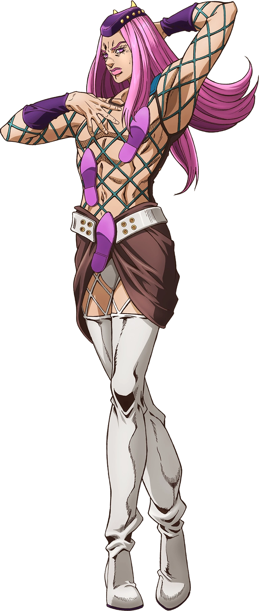
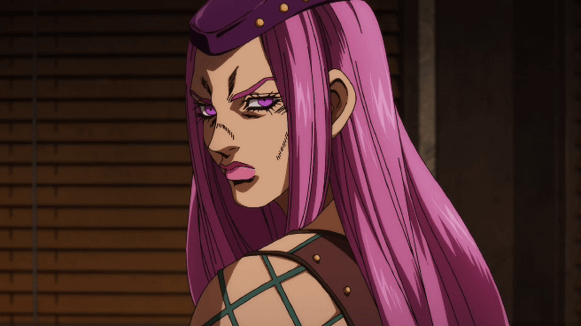
Narciso Anasui (ナルシソ・アナスイ, Narushiso Anasui?) es un personaje secundario y aliado que
aparece en
Stone Ocean.
Anasui es un recluso de la Prisión Green Dolphin Street que se enamora de Jolyne Cujoh y
decide
ayudarla a derrotar a Enrico Pucci.
Anasui es un hombre de altura por encima del promedio y una constitución media o
atlética.
Siempre se le ve con un sombrero delgado y plano en la cabeza, y lleva una malla
ajustada sobre
su parte superior del cuerpo y las piernas, exponiendo la mayor parte de su pecho. La
malla está
formada por franjas diagonales que se asemejan a un patrón de red con intervalos
extremadamente
grandes entre las líneas de ropa. Una de las características más prominentes de su
camisa (o
falta de esta) es la presencia de diseños de huellas pies que llevan desde su falda de
cintura y
hasta en su pecho. Esto quizás refleja uno de los usos de su Stand, ya que Diver Down
muestra la
habilidad de extender sus brazos y pies desde dentro del cuerpo de otra persona.
Descrito en un principio como "el tipo de persona que no ayuda a otras personas",
incluso
Emporio diciendo a F.F. que 'si Weather Report no estuviera allí para mantenerlo
tranquilo, no
se sabe lo que Anasui podría hacer'.
Sin embargo, después de reunirse con Jolyne, ella se convierte en su impulso para
luchar.
Desinteresado y valiente, no tiene miedo de arriesgar su vida por ella. Cuando no están
en
peligro, usará cualquier cosa en su arsenal para atraer a Jolyne a él, aunque no tiene
mucho
éxito y son de hecho por lo general momentos de alivio cómico. Una vez que se da cuenta
de que
ella está en peligro, saltará a la lucha con pocos reparos por su propia seguridad.
Enamorado de
la corajosa y ardiente determinación de ella, Anasui reflexionó que si se diera la
oportunidad,
seguiría a Jolyne por toda la eternidad.
Aunque devoto hacia Jolyne, maltratara a casi cualquier persona que no sea ella. Su
personalidad
noble y protectora tiende a mostrar sus tendencias amenazadoras e intimidantes. Ya sea
amigo o
enemigo, Anasui no dudará en matar a nadie que perturbe su felicidad con Jolyne. En una
ocasión,
amenaza a F.F. a que no interfiera con su trabajo, casi estrangulándola cuando casi
desobedeció.
Aunque está más que dispuesto a entrar en acción por Jolyne, se niega a ayudar a nadie a
menos
que sepa que Jolyne los necesita. La principal excepción a esto es, por supuesto, Jotaro
Kujo,
del que quiere su aprobación para su propuesta de matrimonio a Jolyne.
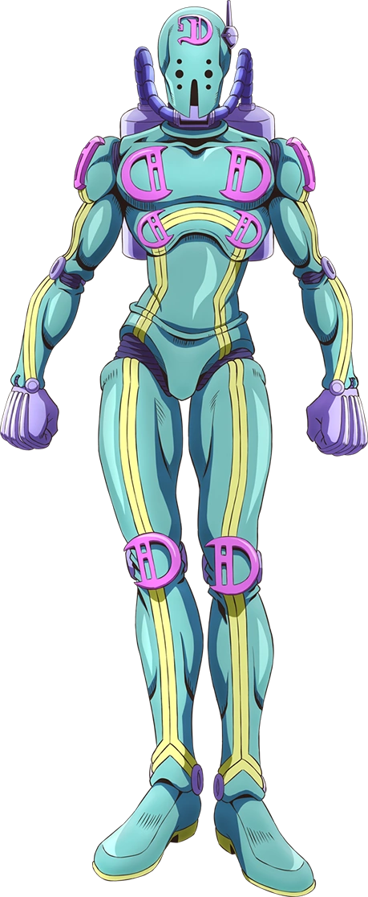

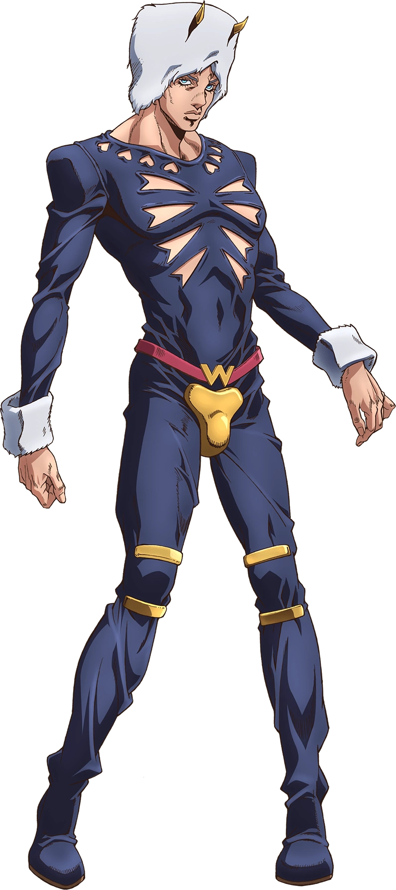
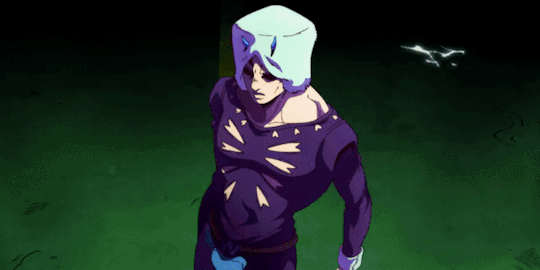
Weather Report (ウェザー・リポート, Uezā Ripōto?) cuyo nombre es Wes Bluemarine (ウェス・ブルーマリン, Uesu
Burūmarin?) pero su nombre real es Domenico Pucci (ドメニコ・プッチ, Domeniko Putchi?) es un
aliado
principal que aparece en Stone Ocean.
Inicialmente presentado como un amnésico, Weather Report está encarcelado en la Prisión
Green
Dolphin Street mientras trata de encontrar pistas sobre su propio pasado, aliándose con
Jolyne
Cujoh para ello.
Más tarde se revela que su verdadero nombre era Domenico Pucci y su hermano gemelo es
Enrico
Pucci.
Weather Report es un hombre de altura por encima del promedio y constitución entre
promedia a
atlética.
Él usa generalmente un sombrero claro de búfalo con la parte superior plana (un sombrero
de piel
con dos cuernos cortos en su frente), y un leotardo negro.
Mientras estuvo privado de sus recuerdos, Weather Report era meloso y excéntrico. Se
pondría
abruptamente justo a unos pocos centímetros al lado del rostro de Jolyne para llamar su
atención
en lugar de llamarla por su nombre y por lo general camina sobre los dedos de los pies.
Era
digno de confianza y compasivo, rescatando a los necesitados sin preocuparse por su
propia
seguridad. A menos que alguien que él conociera estuviera en peligro, apenas entraba en
pánico.
También fue descrito como teniendo un fuerte sentido de la justicia, describiendo la
peor
injusticia como "la maldad que no sabe que es la maldad".
Al recuperar sus recuerdos, revela sus siniestros colores. Aunque todavía conserva su
pasión
anterior por sus amigos, no tiene miedo de hacer alarde de sus poderes para su propio
regocijo.
Ahora sonríe cuando electrocuta a sus víctimas desprevenidas o incluso salta de alegría
entre
sus peligrosos arco iris, con su nueva personalidad aterrando incluso a Anasui. Su
melancolía
sobre sus recuerdos pronto lo consume y lo lleva a arreglar las cosas con su hermano
gemelo.
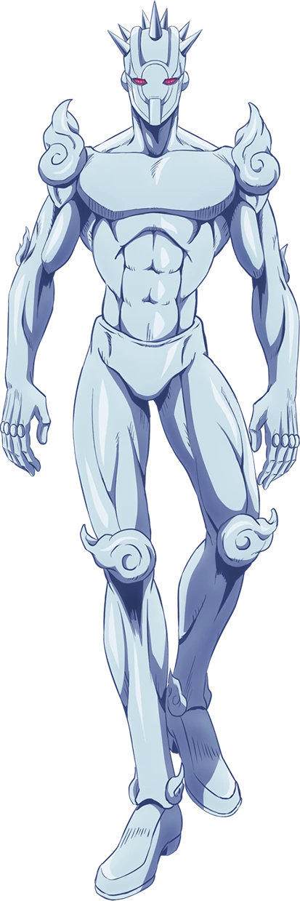

Weather Report es un soporte versátil que posee un control casi total sobre el clima.
Esta
poderosa habilidad le permite a Weather Report una amplia gama de opciones durante una
pelea, ya
sea para la ofensiva o la defensiva, y como resultado, es muy capaz en el combate cuerpo
a
cuerpo.
Control del clima
La capacidad de Weather Report es controlar el clima a través de la manipulación de la
atmósfera misma.
Weather manipula la atmósfera circundante con su Stand, lo que le permite invocar
libremente
varios fenómenos meteorológicos como el viento, la lluvia o los rayos para su beneficio.
Weather
Report tiene suficiente precisión para crear microclimas, pero también un rango lo
suficientemente grande como para hacer llover a 30 km de distancia. La escala de los
fenómenos también es controlable; por lo tanto, Weather Report puede generar fuertes
lluvias y
niebla sobre una gran zona, pero también una pequeña área soleada en medio de la
lluvia.
Manipulación de aire y viento:
El uso más destacado de Weather Report de su habilidad es el control sobre el viento
para varios
propósitos.
En su forma más básica, Weather Report puede hacer que ráfagas de viento afecten objetos
desde
lejos. El clima también puede usar el viento para impulsarse.[7]
Weather Report puede sentir perturbaciones en las corrientes de aire circundantes para
detectar
movimiento.
En combate cuerpo a cuerpo, puede hacer que la ráfaga de viento sea lo suficientemente
fuerte
como para atravesar el cuerpo humano.
Weather Report puede crear capas atmosféricas localizadas para aumentar la resistencia
del aire,
hasta el punto de que puede desviar proyectiles lejos de Weather Report. Luego aparecen
nubes
alrededor de Weather Report. Si alguien golpea las capas, la fricción puede incluso
incendiarlas.
Manipulación de la humedad y las nubes
El control de Weather Report sobre la atmósfera local se extiende a la manipulación de
la
humedad a su alrededor; permitiendo la libre generación y control parcial del agua y,
por
extensión, de las nubes.
Weather Report puede empujar directamente una ráfaga de vapor dentro de alguien para
hincharlo
con agua hasta el punto de que fluya a través de las cuencas de los ojos.
Weather Report también puede evaporar y luego congelar líquidos para crear formas
sólidas
específicas como carámbanos hechos de sangre.
Weather Report puede rodearse a sí mismo y a los demás con un Cloud Suit (雲のスーツ Kumo no
Sūtsu)
para protegerse de las peligrosas condiciones ambientales, como el vacío.
También puede crear un sofá de nubes para proteger a las personas durante un accidente
automovilístico.
Weather Report también puede crear corrientes eléctricas dentro del cuerpo de su
usuario, lo que
permite el control parcial de los cuerpos de varias personas cuando los electrifica.
También
puede traer elementos del clima que de otro modo serían improbables, como lluvias de
animales
(en uno de esos casos, una lluvia de ranas venenosas). Esta habilidad particular se basa
en
escenarios donde densas poblaciones de pequeños animales a menudo son recogidos por
tornados y
"llueven" cuando cesan dichos tornados.
Acumulación de oxígeno
Por último, Weather Report puede manipular la concentración de gases específicos en un
área
cerrada. Emporio usa esta sutil habilidad oculta para derrotar a Pucci al paralizarlo e
intoxicarlo con una concentración letal de oxígeno.
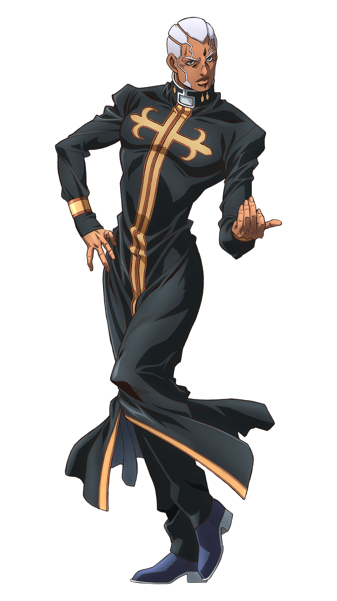
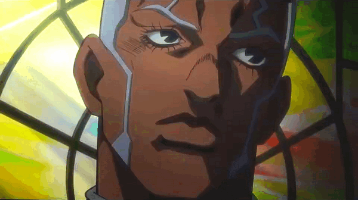
Enrico Pucci (エンリコ・プッチ, Enriko Putchi?) es el antagonista principal de Stone Ocean.
Trabajando como un sacerdote en la Prisión Green Dolphin Street, aspira a implementar un
plan
formulado hace mucho tiempo por DIO para alcanzar el paraíso.
Pucci es un hombre de piel oscura de altura entre promedia o por encima de la media y
cuenta con
una constitución entre delgada y atlética.
Tiene el pelo blanco muy corto. Su vello facial crece en un patrón complejo, con dos
cadenas en
zig-zag desde sus cejas hasta su cabello y patillas delgadas, extendiéndose al borde de
la mitad
de su mandíbula.
Usa un vestido delgado, negro, al estilo de la vestimenta de un sacerdote. Una cruz
dorada esta
imprime en la parte superior, que abarca su pecho y corriendo a lo largo de toda su
extensión,
con dos cruces dobles doradas en las muñecas de sus mangas.
El sacerdote Enrico Pucci es un fanático comprometido con una noción herética de la
Voluntad de
Dios y el plan de DIO.
Siendo adolescente, era un joven de buen corazón, que intentó lo mejor que pudo en
seguir su fe
como un futuro sacerdote. Cuando una trágica serie de acontecimientos condujo al
suicidio de su
amada hermana Perla, cayó en la desesperación y luego llegaría a ver a DIO, con quien se
había
encontrado anteriormente.
Enrico Pucci luego se convirtió en un creyente radical después de frecuentar a DIO, cuyo
credo
principal era que los humanos eran impotentes ante muchas fuerzas que gobernaban el
universo.
Entre estas fuerzas, la Voluntad de Dios y el Destino -que Pucci apoda como "Gravedad"-
fueron
los más mencionados. La historia pasada de Pucci, repleta de coincidencias casi
imposibles y
giros del destino, además de la muerte de Perla cuya responsabilidad no podía atribuirse
a nadie
en particular, serian los inicios probables de esta creencia. Propenso a la charla, un
efecto
persistente de sus muchos debates con DIO, a menudo inserta múltiples curiosidades
aleatorias
para conducir su punto: observando a Miraschon tratando de robar una cruz dorada, Pucci
explicó
cómo Miraschon no podía escapar de su naturaleza; del mismo modo Pucci expuso ante
Jolyne que
ciertas especies de golondrinas imprudentes murieron jóvenes sin darse cuenta de sus
propias
limitaciones, como una metáfora de la Familia Joestar. Mezclando esta creencia con el
plan de
DIO para "alcanzar el Cielo", Pucci trató de hacer que todos los seres humanos
conocieran sus
caminos predestinados a través del poder de Made in Heaven, y darles la "resolución"
para
aceptar su destino, que calificó como la verdadera "felicidad". Esencialmente, deseaba
que los
seres humanos se dieran cuenta de que no podían luchar contra el destino y hacerlos que
se
sometieran a permanecer en paz con su condición de subordinados del Destino.
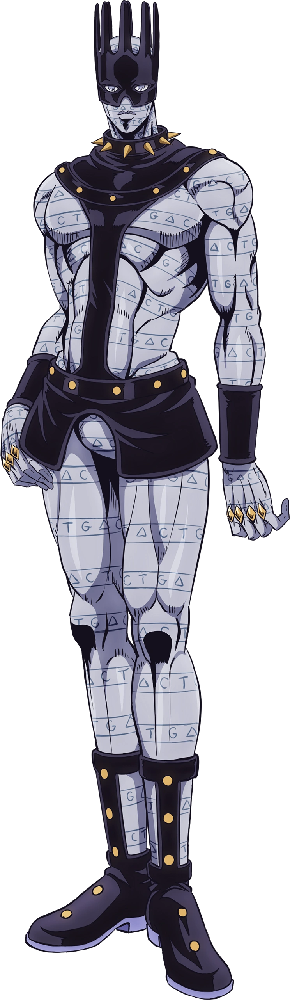
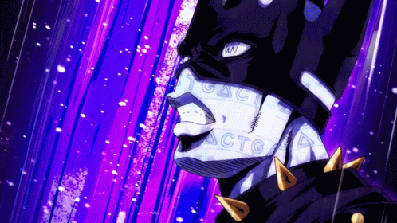